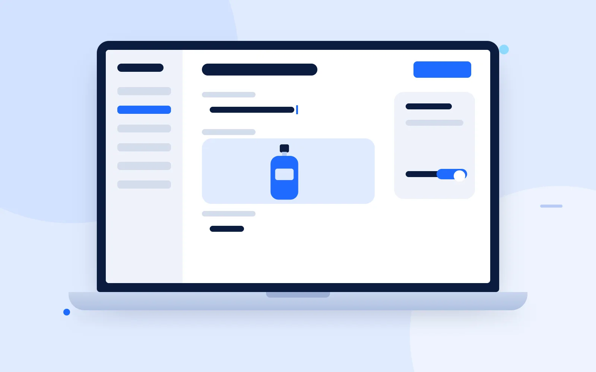
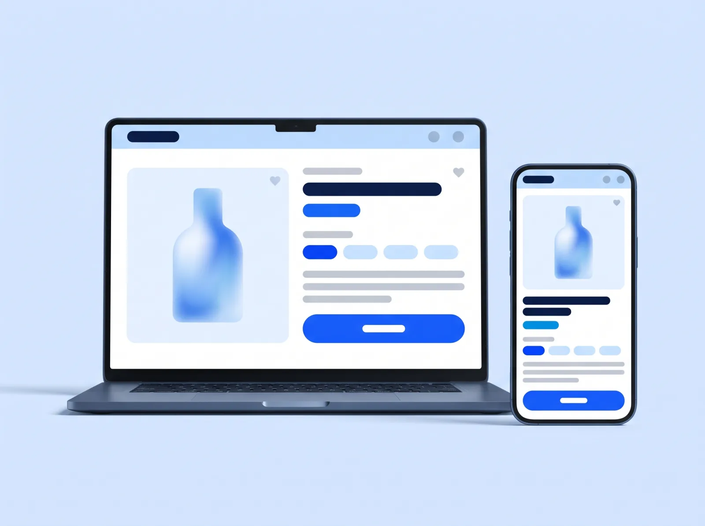

Site web
Un site qui donne envie de vous appeler.
Site vitrine ou boutique en ligne, dessiné pour votre marque, rapide sur téléphone. Vous changez un texte, une photo ou un prix vous-même, sans nous attendre.


01 · Maquettes
Vous voyez votre site avant qu'il existe.
On commence par le plan des pages, puis les maquettes en couleur, sur téléphone et sur ordinateur. Vous les commentez, on ajuste, et le développement démarre seulement quand vous avez validé.

02 · Sur téléphone d'abord
Pensé pour l'écran où arrivent vos clients.
La plupart de vos visiteurs arrivent depuis leur téléphone. Les pages sont dessinées pour lui d'abord, avec des boutons faciles à toucher et des images légères qui s'ouvrent vite, même en 4G.

03 · Vous gardez la main
Changer une photo ne demande pas un appel.
Un back-office simple, avec seulement ce dont vous avez besoin. Une heure de prise en main est comprise, et un petit guide reste à votre disposition.

04 · Boutique en ligne
Vendre en ligne, avec le paiement intégré.
Catalogue, fiches produit, panier et paiement sécurisé. Les commandes arrivent dans votre back-office et vos clients reçoivent leurs emails de confirmation.
Compris dans le projet
Ce que vous recevez
- Maquettes validées avec vousTéléphone, tablette et ordinateur.
- Site développé sur-mesureSans template, à vos couleurs.
- Référencement de baseTitres, descriptions, plan du site.
- Back-office et prise en mainUne heure ensemble, et un guide.
- Mise en ligneSur votre nom de domaine.
- Tout vous appartientCode, design et comptes.
Questions
Questions sur les sites
Combien coûte un site ?
Un site d'une page et une boutique de cent produits n'ont rien à voir. Après un premier échange gratuit, vous recevez un devis détaillé, ligne par ligne.
J'ai déjà un site. Pouvez-vous le refaire ?
Oui. On regarde d'abord ce qui marche aujourd'hui (pages visitées, recherches Google) pour ne rien perdre, puis on reprend vos contenus dans le nouveau site.
Qui héberge le site ?
Le site est mis en ligne chez un hébergeur, sur un compte à votre nom. Vous restez propriétaire de tout, et libre de changer de prestataire.
Les autres services
Et pour la suite


Un projet en tête ?
Dites ce que vous vendez et ce qui coince aujourd'hui. Le premier échange est gratuit, et vous repartez avec des pistes concrètes.